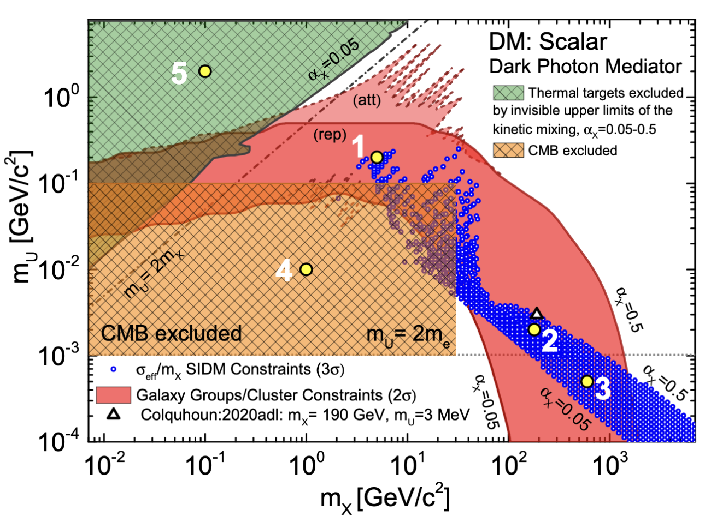

Combined constraints on dark photons from high-energy collisions, cosmology, and astrophysics
This work connects dark photon searches in high-energy collisions with cosmological relic-density targets and astrophysical self-interaction bounds, using PHSD dilepton production to map viable and excluded dark-sector parameter regions.